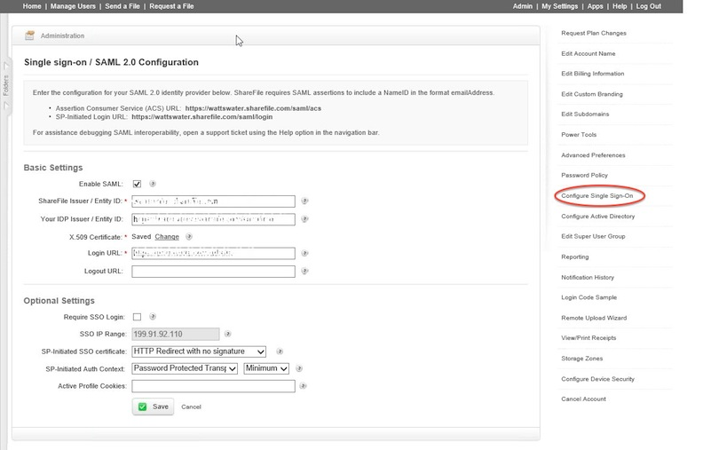

This setup might fail without parameter values that are customized for your organization. Please use the Okta Administrator Dashboard to add an application and view the values that are specific for your organization.
Log in to ShareFile Administrative Console and click on Configure Single Sign-On. 
Check Enable SAML.
The ShareFile Issuer/Entity ID is typically <customername>.sharefile.com.
Copy and Paste following url into IDP Issuer/Entity ID field:Sign in to the Okta Admin app to have this variable generated for you.
Download following certificate and upload in x.509 certificate field:
Sign in to the Okta Admin app to have this variable generated for you.
Copy and Paste the following url in Login URL field: Sign in to the Okta Admin app to have this variable generated for you
Okta does not support Logout URL. Leave that field blank.
Done!
Optional Settings
Require SSO Login: This is a customer preference. If you organization wants SSO Required, enter the information here.
SSO IP Range: Enter as appropriate.
SP-initiated SSO Certificate: HTTP Redirect with no Signature.